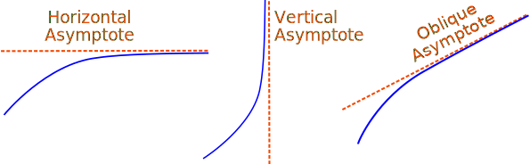
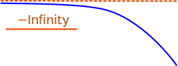
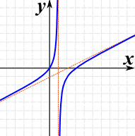

Asymptote
An asymptote is a line that a curve approaches, as it heads towards infinity:

Types
There are three types: horizontal, vertical and oblique:

The direction can also be negative:

The curve can approach from any side (such as from above or below for a horizontal asymptote),

or may actually cross over (possibly many times), and even move away and back again.
The important point is that:
The distance between the curve and the asymptote tends to zero as they head to infinity (or −infinity)
Horizontal Asymptotes
|  | It is a Horizontal Asymptote when: as x goes to infinity (or −infinity) the curve approaches some constant value b |
Vertical Asymptotes
|  | It is a Vertical Asymptote when: as x approaches some constant value c (from the left or right) then the curve goes towards infinity (or −infinity). |
Oblique Asymptotes
|  | It is an Oblique Asymptote when: as x goes to infinity (or −infinity) then the curve goes towards a line y=mx+b (note: m is not zero as that is a Horizontal Asymptote). |
Example: (x2−3x)/(2x−2)

The graph of (x2-3x)/(2x-2) has:
- A vertical asymptote at x=1
- An oblique asymptote: y=x/2 − 1
These questions will only make sense when you know Rational Expressions: